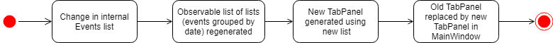

By: Team W13-2 Since: Sept 2018 Licence: MIT
- 1. Setting up
- 2. Design
- 3. Implementation
- 3.1. Toggles the UI tab to the tab on its right.
- 3.2. Select an existing event to be detailed in the notification if notification is enabled.
- 3.3. Enable/Disable Notification feature
- 3.4. Undo/Redo feature
- 3.5. Add/Delete Events feature
- 3.6. See Event Contacts feature
- 3.7. Edit Event Address feature
- 3.8. Add Event Tags feature
- 3.9. Filtering of Events
- 3.10. Command Auto-completion feature
- 3.11. Tab feature
- 3.12. Import Contacts
- 3.13. Show Person’s faculty location visually
- 3.14. Generate a random meeting location for event
- 3.15. Logging
- 3.16. Configuration
- 4. Documentation
- 5. Testing
- 6. Dev Ops
- Appendix A: Product Scope
- Appendix B: User Stories
- Appendix C: Use Cases
- Appendix D: Non Functional Requirements
- Appendix E: Glossary
- Appendix F: Instructions for Manual Testing
- F.1. Launch and Shutdown
- F.2. Deleting a person
- F.3. Showing a person’s faculty
- F.4. Generating a possible meeting location
- F.5. Adding an Event
- F.6. Deleting an Event
- F.7. Listing all events
- F.8. Finding all events with specific tags
- F.9. Adding an event tag
- F.10. Editing an event’s address
- F.11. Viewing an event’s contacts
- F.12. Command auto-completion
- F.13. Saving data
1. Setting up
1.1. Prerequisites
-
JDK
9or laterJDK 10on Windows will fail to run tests in headless mode due to a JavaFX bug. Windows developers are highly recommended to use JDK9. -
IntelliJ IDE
IntelliJ by default has Gradle and JavaFx plugins installed.
Do not disable them. If you have disabled them, go toFile>Settings>Pluginsto re-enable them.
1.2. Setting up the project in your computer
-
Fork this repo, and clone the fork to your computer
-
Open IntelliJ (if you are not in the welcome screen, click
File>Close Projectto close the existing project dialog first) -
Set up the correct JDK version for Gradle
-
Click
Configure>Project Defaults>Project Structure -
Click
New…and find the directory of the JDK
-
-
Click
Import Project -
Locate the
build.gradlefile and select it. ClickOK -
Click
Open as Project -
Click
OKto accept the default settings -
Open a console and run the command
gradlew processResources(Mac/Linux:./gradlew processResources). It should finish with theBUILD SUCCESSFULmessage.
This will generate all resources required by the application and tests.
1.3. Verifying the setup
-
Run the
seedu.address.MainAppand try a few commands -
Run the tests to ensure they all pass.
1.4. Configurations to do before writing code
1.4.1. Configuring the coding style
This project follows oss-generic coding standards. IntelliJ’s default style is mostly compliant with ours but it uses a different import order from ours. To rectify,
-
Go to
File>Settings…(Windows/Linux), orIntelliJ IDEA>Preferences…(macOS) -
Select
Editor>Code Style>Java -
Click on the
Importstab to set the order-
For
Class count to use import with '*'andNames count to use static import with '*': Set to999to prevent IntelliJ from contracting the import statements -
For
Import Layout: The order isimport static all other imports,import java.*,import javax.*,import org.*,import com.*,import all other imports. Add a<blank line>between eachimport
-
Optionally, you can follow the UsingCheckstyle.adoc document to configure Intellij to check style-compliance as you write code.
1.4.2. Updating documentation to match your fork
After forking the repo, the documentation will still have the EventsPlus+ branding and refer to the CS2103-AY1819S1-W13-2/main repo.
If you plan to develop this fork as a separate product, you should do the following:
-
Configure the site-wide documentation settings in
build.gradle, such as thesite-name, to suit your own project. -
Replace the URL in the attribute
repoURLinDeveloperGuide.adocandUserGuide.adocwith the URL of your fork.
1.4.3. Setting up CI
Set up Travis to perform Continuous Integration (CI) for your fork. See UsingTravis.adoc to learn how to set it up.
After setting up Travis, you can optionally set up coverage reporting for your team fork (see UsingCoveralls.adoc).
| Coverage reporting could be useful for a team repository that hosts the final version but it is not that useful for your personal fork. |
Optionally, you can set up AppVeyor as a second CI (see UsingAppVeyor.adoc).
| Having both Travis and AppVeyor ensures your App works on both Unix-based platforms and Windows-based platforms (Travis is Unix-based and AppVeyor is Windows-based) |
2. Design
2.1. Architecture

The Architecture Diagram given above explains the high-level design of the App. Given below is a quick overview of each component.
Main has only one class called MainApp. It is responsible for,
|
-
At app launch: Initializes the components in the correct sequence, and connects them up with each other.
-
At shut down: Shuts down the components and invokes cleanup method where necessary.
Commons represents a collection of classes used by multiple other components. Two of those classes play important roles at the architecture level.
-
EventsCenter: This class (written using Google’s Event Bus library) is used by components to communicate with other components using events (i.e. a form of Event Driven design) -
LogsCenter: Used by many classes to write log messages to the App’s log file.
The rest of the App consists of four components.
Each of the four components
-
Defines its API in an
interfacewith the same name as the Component. -
Exposes its functionality using a
{Component Name}Managerclass.
For example, the Logic component (see the class diagram given below) defines it’s API in the Logic.java interface and exposes its functionality using the LogicManager.java class.
Events-Driven nature of the design
The Sequence Diagram below shows how the components interact for the scenario where the user issues the command delete 1.

delete 1 command (part 1)
Note how the Model simply raises a SystemChangedEvent when the application’s data is changed, instead of asking the Storage to save the updates to the hard disk.
|
The diagram below shows how the EventsCenter reacts to that event, which eventually results in the updates being saved to the hard disk and the status bar of the UI being updated to reflect the 'Last Updated' time.

delete 1 command (part 2)
Note how the event is propagated through the EventsCenter to the Storage and UI without Model having to be coupled to either of them. This is an example of how this Event Driven approach helps us reduce direct coupling between components.
|
The sections below give more details of each component.
2.2. UI component
API : Ui.java
The UI consists of a MainWindow that is made up of parts e.g.CommandBox, ResultDisplay, PersonListPanel, StatusBarFooter, BrowserPanel etc. All these, including the MainWindow, inherit from the abstract UiPart class.
The UI component uses JavaFx UI framework. The layout of these UI parts are defined in matching .fxml files that are in the src/main/resources/view folder. For example, the layout of the MainWindow is specified in MainWindow.fxml
The UI component,
-
Executes user commands using the
Logiccomponent. -
Binds itself to some data in the
Modelso that the UI can auto-update when data in theModelchange. -
Responds to events raised from various parts of the App and updates the UI accordingly.
2.3. Logic component
API :
Logic.java
-
Logicuses theSystemParserclass to parse the user command. -
This results in a
Commandobject which is executed by theLogicManager. -
The command execution can affect the
Model(e.g. adding a person) and/or raise events. -
The result of the command execution is encapsulated as a
CommandResultobject which is passed back to theUi.
Given below is the Sequence Diagram for interactions within the Logic component for the execute("delete 1") API call.

delete 1 Command2.4. Model component
API : Model.java
The Model,
-
stores a
UserPrefobject that represents the user’s preferences. -
stores the application’s data.
-
exposes an unmodifiable
ObservableList<Person>that can be 'observed' e.g. the UI can be bound to this list so that the UI automatically updates when the data in the list change. -
exposes an unmodifiable
ObservableList<Event>that can be 'observed' e.g. the UI can be bound to this list so that the UI automatically updates when the data in the list change. -
exposes an unmodifiable
ObservableList<Tag>that can be 'observed' e.g. the UI can be bound to this list so that the UI automatically updates when the data in the list change. -
does not depend on any of the other three components.
2.5. Storage component
API : Storage.java
The Storage component,
-
can save
UserPrefobjects in json format and read it back. -
can save the application’s data in xml format and read it back.
2.6. Common classes
Classes used by multiple components are in the seedu.System.commons package.
3. Implementation
This section describes some noteworthy details on how certain features are implemented.
3.1. Toggles the UI tab to the tab on its right.
3.1.1. Current Implementation
Toggle command raises a TabPanelSelectionChangedEvent event through the ModelManager. The tab panel is subscribed to this event and will loop the tabList and change the selected tab to its adjacent tab when the event is raised.
-
logic#parser#ToggleCommandParser()— creates a ToggleCommand object. -
logic#commands#ToggleCommand()— raises a TabPanelSelectionChangedEvent through the ModelManager.
| ToggleCommand is not compatible with undo/redo since there is no writing of data to storage. |
3.1.3. Aspect: How change of UI tab is executed
-
Alternative 1 (current choice): TabPanel subscribe to an event which will be raised by ToggleCommand
-
Pros: Convenient to implement.
-
Cons: Creates a new object and a new handler method.
-
-
Alternative 2: Pass TabPanel into the ToggleCommand and select the new tab from ToggleCommand
-
Pros: Does not require new event to be raised.
-
Cons: Increases coupling.
-
3.2. Select an existing event to be detailed in the notification if notification is enabled.
3.2.1. Current Implementation
Details of favourite event (i.e. event name, date, day, time, details) stored as a String "Favourite" in preferences.json file. The favourite mechanism is implemented through the ModelManager. Upon startup, if notification is enabled, and there is a String "favourite" in preferences.json is non-null, the notification will display the String "favourite". "Favourite" in preferences.json is also loaded into ModelManager. Upon executing FavouriteCommand, the event is selected based on the input parameters and the filteredEventsListByDate. The attributes of the event is formatted into a String and saved to the ModelManager. Upon exit, the formatted String in ModelManager is saved to preferences.json to ensure statefulness.
-
logic#parser#FavouriteCommandParser()— creates a FavouriteCommand object based on user’s inputs. -
logic#commands#FavouriteCommand()— updates the ModelManager’s favouriteEvent attribute.
Given below is an example usage scenario and how the favourite mechanism behaves at each step.
Step 1. The user launches the application for the first time. The model’s favouriteEvent attribute is initially null.
Step 2. The user executes favourite d/2018-04-01 i/1. The favourite command calls FavouriteCommandParser which checks validity of user inputs and creates a new FavouriteCommand which selects the event and create a formatted String from the event details.
| The favourite command will update favouriteEvent regardless of whether the new favouriteEvent String is the same as the existing String. |
3.2.3. Aspect: How favourite is updated
-
Alternative 1 (current choice): Re-assign Model’s favouriteEvent regardless of previous preference
-
Pros: Easy to implement.
-
Cons: Wasteful in the case of same favorite event.
-
-
Alternative 2: Check current favouriteEvent and only assign new value if it is different from the previous value.
-
Pros: Do not waste computing cycles on unecessary re-assingment of favouriteEvent.
-
Cons: Code becomes more complicated because additional check required.
-
Aspect: Writing to preferences.json
-
Alternative 1 (current choice): Write all Model preferences to preferences.json
-
Pros: Easy to implement.
-
Cons: Unecessary computing cycles wasted on writing when possibly no change
-
-
Alternative 2: Check for difference between Model preferences and preferences.json, only write to preferences.json if there is difference.
-
Pros: Efficient.
-
Cons: Code becomes more complicated because additional check required
-
3.3. Enable/Disable Notification feature
3.3.1. Current Implementation
Notification preference is stored in the preferences.json file. The notification mechanism is facilitated by Javafx. Upon startup, notification preference is loaded from preferences.json and saved to the ModelManager. Upon exit, the model’s notification preference is saved to preferences.json to ensure statefulness. When enabled, it creates a child stage and scene from the main window and displays with a countdown timer to automatically close the stage. Additionally, it implements the following operations
-
ui#NotificationWindow()— creates the stage and scene for the notification using 2 String inputs:titleandmessage -
logic#parser#NotificationCommandParser()— creates a NotificationCommand object based on user’s input -
logic#commands#NotificationCommand()— updates the ModelManager’s notificationPref attribute.
Given below is an example usage scenario and how the enable/disable notification mechanism behaves at each step.
Step 1. The user launches the application for the first time. The model’s notification preference is initally enabled, the notification window appears.
Step 2. The user executes notification disable. The notification command calls NotificationCommandParser which converts disable into the boolean false and creates a new Notification Command which updates the Model’s notification preference to false.
| The notification command will update the notification preference regardless of whether the new preference is same as the previous preference. |
3.3.2. Design Considerations
Aspect: How notification preferences is updated
-
Alternative 1 (current choice): Re-assign Model’s notification preference regardless of previous preference
-
Pros: Easy to implement.
-
Cons: Wasteful in the case of same notification preference.
-
-
Alternative 2: Check current notification preference and only assign new value if it is different from the previous value.
-
Pros: Do not waste computing cycles on unecessary re-assingment of notification preference.
-
Cons: Code becomes more complicated because additional check required.
-
Aspect: Writing to preferences.json
-
Alternative 1 (current choice): Write all Model preferences to preferences.json
-
Pros: Easy to implement.
-
Cons: Unecessary computing cycles wasted on writing when possibly no change
-
-
Alternative 2: Check for difference between Model preferences and preferences.json, only write to preferences.json if there is difference.
-
Pros: Efficient.
-
Cons: Code becomes more complicated because additional check required
-
3.4. Undo/Redo feature
3.4.1. Current Implementation
The undo/redo mechanism is facilitated by VersionedSystem.
It extends System with an undo/redo history, stored internally as an SystemStateList and currentStatePointer.
Additionally, it implements the following operations:
-
VersionedSystem#commit()— Saves the current address book state in its history. -
VersionedSystem#undo()— Restores the previous address book state from its history. -
VersionedSystem#redo()— Restores a previously undone address book state from its history.
These operations are exposed in the Model interface as Model#commitSystem(), Model#undoSystem() and Model#redoSystem() respectively.
Given below is an example usage scenario and how the undo/redo mechanism behaves at each step.
Step 1. The user launches the application for the first time. The VersionedSystem will be initialized with the initial address book state, and the currentStatePointer pointing to that single address book state.

Step 2. The user executes delete 5 command to delete the 5th person in the address book. The delete command calls Model#commitSystem(), causing the modified state of the address book after the delete 5 command executes to be saved in the SystemStateList, and the currentStatePointer is shifted to the newly inserted address book state.

Step 3. The user executes add n/David … to add a new person. The add command also calls Model#commitSystem(), causing another modified address book state to be saved into the SystemStateList.

If a command fails its execution, it will not call Model#commitSystem(), so the address book state will not be saved into the SystemStateList.
|
Step 4. The user now decides that adding the person was a mistake, and decides to undo that action by executing the undo command. The undo command will call Model#undoSystem(), which will shift the currentStatePointer once to the left, pointing it to the previous address book state, and restores the address book to that state.

If the currentStatePointer is at index 0, pointing to the initial address book state, then there are no previous address book states to restore. The undo command uses Model#canUndoSystem() to check if this is the case. If so, it will return an error to the user rather than attempting to perform the undo.
|
The following sequence diagram shows how the undo operation works:

The redo command does the opposite — it calls Model#redoSystem(), which shifts the currentStatePointer once to the right, pointing to the previously undone state, and restores the address book to that state.
If the currentStatePointer is at index SystemStateList.size() - 1, pointing to the latest address book state, then there are no undone address book states to restore. The redo command uses Model#canRedoSystem() to check if this is the case. If so, it will return an error to the user rather than attempting to perform the redo.
|
Step 5. The user then decides to execute the command list. Commands that do not modify the address book, such as list, will usually not call Model#commitSystem(), Model#undoSystem() or Model#redoSystem(). Thus, the SystemStateList remains unchanged.

Step 6. The user executes clear, which calls Model#commitSystem(). Since the currentStatePointer is not pointing at the end of the SystemStateList, all address book states after the currentStatePointer will be purged. We designed it this way because it no longer makes sense to redo the add n/David … command. This is the behavior that most modern desktop applications follow.

The following activity diagram summarizes what happens when a user executes a new command:

3.4.2. Design Considerations
Aspect: How undo & redo executes
-
Alternative 1 (current choice): Saves the entire address book.
-
Pros: Easy to implement.
-
Cons: May have performance issues in terms of memory usage.
-
-
Alternative 2: Individual command knows how to undo/redo by itself.
-
Pros: Will use less memory (e.g. for
delete, just save the person being deleted). -
Cons: We must ensure that the implementation of each individual command are correct.
-
Aspect: Data structure to support the undo/redo commands
-
Alternative 1 (current choice): Use a list to store the history of address book states.
-
Pros: Easy for new Computer Science student undergraduates to understand, who are likely to be the new incoming developers of our project.
-
Cons: Logic is duplicated twice. For example, when a new command is executed, we must remember to update both
HistoryManagerandVersionedSystem.
-
-
Alternative 2: Use
HistoryManagerfor undo/redo-
Pros: We do not need to maintain a separate list, and just reuse what is already in the codebase.
-
Cons: Requires dealing with commands that have already been undone: We must remember to skip these commands. Violates Single Responsibility Principle and Separation of Concerns as
HistoryManagernow needs to do two different things.
-
3.5. Add/Delete Events feature
3.5.1. Current Implementation
Structure of an Event
In the Model component, an Event consists of various Event attributes.
Namely, the classes EventName, EventDescription, EventDate, EventTime, EventAddress are used to represent respective information in an Event,
as shown in the Class diagram below. Note that EventDay is generated from EventDate values, and each event also contains a Set of Person and Tag objects,
which are used to represent the event contacts (from the address book) and event tags (from event tags currently existing in the address book).
By doing so, we achieve more abstraction and cohesion, and this abides by the Separation of Concerns (SoC) principle at the class level.
On top of facilitating checking of bugs within the individual attributes,
doing so will also allow the developer to alter the definition of the different attribute classes, as well as to add more attributes into the
Event class easily.

Adding/Deleting of an Event
Methods have been added to ModelManager, AddressBook and the newly-added class UniqueEventList to facilitate adding and deleting of events.
In order to limit modification of the internal list of Event objects, changes to this list is only carried out at the most fundamental level,
which is UniqueEventList. AddressBook stores a reference to this internal list, and ModelManager stores an unmodifiable copy of this list.
An example usage scenario of the adding of events is as shown in the sequence diagram below. The diagram shows the interaction between the different components in the system when an event is added. The interaction between components is similar for the deletion of an event.
More specific interactions between Logic and Model are as shown in the diagram below.
Step 1. User enters command to add an event
Step 2. AddressBookParser calls AddEventCommandParser, which generates an AddEventCommand with an Event and Set<Index>. The latter specifies the contacts (indices) to add into the event.
Step 3. AddEventCommand calls Model#hasEvent, Model#hasClashingEvent, Model#hasEventTag to check if event details are valid.
Step 4. AddEventCommand calls Event#setEventContacts to set the Set<Person> of event contacts (Each Person has to be in the existing address book records).
Step 5. AddEventCommand calls Model#addEvent after all checks have passed. The event is added into the system from the Model component.
For deletion of event(s), the flow is similar.
The sequence diagram for the deletion of event is shown below.

Step 1. User enters command to delete an event based on the event date and index (as displayed in the UI)
Step 2. AddressBookParser calls DeleteEventCommandParser, which generates an DeleteEventCommand with an EventDate and Index.
Step 3. DeleteEventCommand gets the event.
Step 4. The event from step 3 is deleted from the system from the Model component.
Events are retrieved based on their date and index in the displayed events list, as shown in the diagram below.
For the case of DeleteEventCommand, we let XYZCommand be DeleteEventCommand.
Step 1. DeleteEventCommand calls Model#getFilteredEventListByDate to retrieve the last shown event list.
Step 2. DeleteEventCommand calls getTargetDateList to retrieve the list from which the event belongs to.
Step 3. DeleteEventCommand calls getEvent to retrieve the event based on its index in the list from step 2.
Upon adding/deletion of events in Model, AddressBookChangedEvent, AddressBookEventChangedEvent and EventPanelDisplayChangedEvent
are triggered from the Model component.
The raised events are handled by:
-
UI, which updates the displayed information and updates the active tab to the Events tab, and -
Storage, which saves the information to an XML data file.
For instance, when an Event is added (or deleted), the event triggers are handled as follows.

3.5.2. UI Events Display
To display the event information according to their date, a list of lists of events grouped by EventDate is set in the ListView object in the EventPanelList.
Each cell represents the EventListCard for a particular date, which contains all the events, each displayed in a EventCard. For this implementation,
we require ModelManager to be able to return such an ObservableList<List<Event>> object to the UI class MainWindow, and this is achieved via the method
ModelManager#getFilteredEventListByDate.
3.5.3. Design Considerations
Aspect: Data Structure to Support the UI Events Display
-
Alternative 1 (current choice): Store a list of type
ObservableList<List<Event>>in theListViewobject in theEventPanelList. This list is re-computed fromModeleach time a change in the internal list of events is detected, and the updated list is passed to the UI classMainWindow. This facilitates a regeneration of theTabPanelstored inMainWindow, updating the display of events to the user.-
Pros: We only need to maintain one internal list of
Eventobjects. For the UI to be updated with new information whenever events are added into/deleted from the underlyingEventlist, we make use of a listener on thefilteredEventslist inModel.-
Whenever there is a change detected by
filteredEvents, anAddressBookEventChangedEventis posted -
MainWindowresets itsTabPaneland passes the re-computed list (events grouped by date) into it.
-
-
Cons: There is a regeneration of the
TabPanelobject inMainWindoweach time such an event occurs. However, this overhead is still acceptable given the current scale of theAddressBook.
-
-
Alternative 2: Store a list of type
ObservableList<ObservableList<Event>>inUIandModel, where eachObservableList<Event>is the list of events for a given date. Update this alongside thefilteredEventlist inModel, by adding a listener tofilteredEvents, such that each time the internal list of events changes, the corresponding update is performed on the 2D-list.-
Pros: There is no need to regenerate the list for
UI, since information in this list stays updated. This reduces overhead incurred in list regeneration. -
Cons: If more actions are carried out on the internal event list, the listener will have to be updated, as it will have to listen to more types of changes. This could potentially create more bugs in the code.
-
-
Alternative 3: Store a list of type
ObservableList<ObservableList<Event>>(similar structure as in Alternative 2) inUIandModel. Create another internal listUniqueEventListByDatefor this list of lists. Update this alongsideUniqueEventList.-
Pros:
-
There is no need to regenerate the list for
UI, since information in this list stays updated. -
No listener is required, since an event can be added to
UniqueEventListandUniqueEventListByDatesimultaneously.
-
-
Cons: Two lists have to be maintained, both storing the same
Eventobjects. The task of maintaining two lists may lead to inconsistencies between the two lists and more complex code in future.
-
Aspect: Restrictions on Event Tags
-
Alternative 1 (current choice): Valid event tags to be restricted to a list which can be edited by the user.
-
Pros: Allows event tags to be standardized, and the user can keep track of the all the types of events he/she has just by referring to the
Flowpanecontaining all the event tags available in the system. This also facilitates finding of events by event tags. -
Cons: More work has to be done from the user’s end, as he/she has to add an event tag in the system before adding an event with that tag.
-
-
Alternative 2: No restriction to event tags.
-
Pros: Less work by the user, as he/she can just add any event tag when adding an event into the system.
-
Cons: Less standardization of event tags, which may cause the user’s data to become more disorganized in future.
-
-
Alternative 3: (2-in-1 approach) Event tags that are non-existing in EventsPlus+ to be added upon adding an event with that new tag.
-
Pros: Less work by the user, and tag gets automatically added into the system.
-
Cons: The
addEventcommand will be performing two different actions - adding an event and adding an event tag. This may violate the Single Responsibility Principle (SRP) for theAddEventCommandclass.
-
3.6. See Event Contacts feature
3.6.1. Current Implementation
To obtain an event’s contacts, comparisons are done using Person#isSamePerson to check if for each event contact, there exists a person in the system
who is the same person as the contact. By the use of a Predicate with this logic, we then apply the filter on filteredPersons in Model.
The sequence diagram below shows a typical usage of the feature. The flow for getting an event using date and index is the same as in getEvent.
Step 1. User enters command to see an event’s contacts.
Step 2. AddressBookParser calls SeeEventContactsCommandParser, which generates a SeeEventContactsCommand` with an EventDate and Index
Step 3. SeeEventContactsCommand gets the event.
Step 4. A ExistingPersonInEventPredicate is created based on the event’s contacts from the event retrieved in Step 3.
Step 5. SeeEventContactsCommand calls Model#updateFilteredEventList to filter the displayed list using the Predicate object generated in step 4.
3.6.2. Considerations
The displayed person list shown using this feature is aligned with the contact information displayed in the UI when hovering over the event contact.
Namely, both the displayed person list and information displayed in the UI are obtained by checking if there is a same person as the person originally
added into the event (using Person#isSamePerson) in the system. If there is, the information is shown; else, the person is regarded as
having been deleted from the system.
More specific scenarios are as follows:
-
When an event contact is deleted from EventsPlus+, the
seeEventContactscommand would not display the person in the filtered list. Simultaneously, when hovering over the event contact, the user would see a message indicating that the person has been deleted from the system. This is so that users can still see the person as related to the event (when the event is first added), even when the person’s contact details no longer exist in the address book. -
When an event contact is edited in EventsPlus+, if the edited person is still the same person (using
Person#isSamePerson) as the original person,seeEventContactswould display the edited person. When hovering over the contact, the edited person would also be displayed. -
When an event contact is edited in EventsPlus+, if the edited person is no longer the same person (using
Person#isSamePerson),seeEventContactswould not display the original nor edited person. When hovering over the contact, if there is no such person in the system who is the same person as the person originally added into EventsPlus+, the user would see a message indicating that the person has been deleted from the system.
3.7. Edit Event Address feature
3.7.1. Current Implementation
To edit an event’s existing address, the system first retrieves the event from the address book. This process is similar to that for
deleting an event. A new Event object is created with the same details as the old Event object, but with the updated EventAddress.
This new Event replaces the old one in the address book in the Model#updateEvent method, i.e. the old Event object is removed
from the internal list, and the new one set in its position.
The overall flow between the Logic and Model component when editing an event address’s tag is as follows.
The flow for getting an event using date and index is the same as in getEvent.
Step 1. User enters command to edit an event’s address based on the event date and index (as displayed in the UI)
Step 2. AddressBookParser calls EditEventAddressCommandParser, which generates an EditEventAddressCommand with an EventDate, Index
and the updated EventAddress.
Step 3. EditEventAddressCommand gets the event.
Step 4. A new event with all details (except EventAddress) duplicated from the old event in step 3 is created.
The EventAddress attribute of this new event is set to the updated EventAddress passed in to EditEventAddressCommand in step 2.
Step 5. The old event is replaced with the new one in the system from the Model component, through the execution of Model#updateEvent.
3.7.2. Considerations
When editing an event, there are several possible values that can be updated, including the event’s name, description, etc.
However, this functionality is mainly catered to complement the suggestLocation functionality, whereby the user
can first add an event without specifying any location (and address will be displayed as TBD), and
edit the suggested location in afterwards.
3.8. Add Event Tags feature
3.8.1. Current Implementation
The list of event tags in the system is stored in a UniqueTagList in Model.
This implementation requires all event Tag objects to be unique (using case-insensitive comparison)
All event tags are always shown, hence it is sufficient to
to keep an ObservableList<Tag> in ModelManager, rather than a FilteredList which is used to store list of Person and Event objects.
An event tag specified by the user is added in the system as depicted in the sequence diagram below.
Step 1. User enters command to add an event tag.
Step 2. AddressBookParser calls AddEventTagCommandParser, which generates an AddEventTagCommand with a Set of Tag object.
Step 3. AddEventTagCommand calls Model#hasEventTag to check for duplicate tags already in the system.
Step 4. AddEventTagCommand calls Model#addEventTag to add the new event Tag into Model.
3.9. Filtering of Events
3.9.1. Find Event (by tag) feature
Current Implementation
To find events by their tags, we make use of a Predicate. The EventTagMatchesKeywordsPredicate is used in filtering
all events which have at least one tag matching at least one of the keywords provided by the user.
Step 1. User enters command to find events with certain tags.
Step 2. AddressBookParser calls FindEventCommandParser, which generates an FindEventCommand with an EventTagMatchesKeywordsPredicate.
Step 3. FindEventCommand calls Model#updateFilteredEventList to filter the displayed list using the Predicate generated in step 2.
Similar to the other event-related commands, the list-filtering is done in Model, and
the change is propagated to the UI component by triggering an event.
The details of the event triggers are as follows.
3.9.2. Listing of all events
Current Implementation
To list all events, we make use of a Predicate which is always true (the PREDICATE_LIST_ALL_EVENTS constant).
The UI components are updated using a similar flow (by event triggers) to the find event feature.
Note: The inclusion of the EventDisplayPanelChangedEvent is required in Model#updateFilteredEventList
so that TabPanel can switch to the event tab automatically whenever any of these commands are executed,
even if there is no change to data in the filtered list
(for example, when listEvent is executed even though all events are already currently listed).
3.10. Command Auto-completion feature
3.10.1. Current Implementation
Command auto-completion uses a fixed list of all command words in EventsPlus+. Each time the user
presses the Tab key, a check is run against the internal list of command words (including aliases)
and the input is auto-completed to the nearest command word containing the current user input, if any.
The following activity diagram outlines the typical usage of this feature.
3.10.2. Aspect: Computing the nearest valid command word
-
Alternative 1 (current choice): Each time the
Tabkey is pressed,String#startsWithPrefixis used to check against the internal list for the nearest possible command word.-
Pros: The implementation is neater as most of the checking is done by
String#startsWithPrefix. -
Cons: The current input has to be checked against potentially every valid command word.
-
-
Alternative 2: Store a
HashMapwith maps every possible prefix of every command word to the corresponding command word. Do a lookup in theHashMapusing current user input as the key and return the value (command word) if any.-
Pros: Typically constant time lookup for each prefix in the
HashMap. -
Cons: More space required to store all the possible prefixes. Furthermore, if no such prefix is contained in the mapping, takes linear time with respect to size of the map.
-
-
Alternative 3 Use a Prefix Tree (Trie) implementation, where the intermediate nodes are the prefixes and leaf nodes are the valid command words.
-
Pros: Provides a balance between time and space complexity.
-
Cons: Potentially more complex implementation.
-
3.11. Tab feature
3.11.1. Current implementation
UI component consists of a TabPanel which stores all the Tab objects in the UI as follows.
-
Alternative 1 (current choice):
TabPanelto store allTabobjects.-
Pros: New tabs can be added easily as a class, and initialized in
TabPanel. This abides by the SoC principle and each tab can be managed separately from the others.
-
-
Alternative 2: Store the methods for each
Tabin the same classTabPanel. Hence, all the tabs and their methods are contained in this class.-
Pros: Less code needed, especially if some tabs have similar or overlapping methods.
-
Cons: Does not abide by SoC and SRP principle, since this one class would have to change for many reasons.
-
3.12. Import Contacts
3.12.1. Current Implementation
When FileReader is created, it will read the provided CSV file, breaking the first line into Arrays of Strings.
FileReader then take note of the index of mandatory fields:
-
Name
-
Email
-
Phone Number
-
Address
-
Faculty
ModelManager now implements importContacts and it calls on VersionedAddressBook.
VersionAddressBook is being called so that undo redo can work on import contacts command.
VersionAddressBook extends AddressBook and it implements importContacts.
importContacts will get the list of contacts from FileReader and the index all all mandatory fields.
For each of the contact in contact list, Person is created using index saved for each mandatory fields.
Returned Person objects are then inserted into UniquePersonsList with validation.
The number of successful inserts will be displayed.
The following sequence diagram shows how the importContactsCommand operation works:
3.13. Show Person’s faculty location visually
3.13.1. Current Implementation
The displaying of the a Person's faculty is facilitated by the newly added Faculty field in the Person class. This
Faculty field is defined as a separate class (akin to other classes constituting the Person class such as Email and Address).
During the adding of Person's to EventsPlus+'s address book, the Faculty class will ensure that the argument passed in is that of
a valid NUS faculty. It does this via an inner enum class called Faculties which stores as constants the only accepted Faculty
argument values. The isInEnum method is used to check that the argument passed already exists as one of the constants.
The valid arguments allowed are namely:
-
SOC (School of Computing)
-
FOS (Faculty of Science)
-
YLLSOM (Yong Loo Lin School of Medicine)
-
FOD (Faculty of Dentistry)
-
BIZ (NUS Business School)
-
SDE (School of Design and Environment)
-
FOE (Faculty of Engineering)
-
FOL (Faculty of Law)
-
YSTCOM (Yong Siew Toh Conservatory of Music)
-
FASS (Faculty of Arts and Social Sciences)
A "-" response is also allowed as it is possible that EventsPlus+'s address book may indeed have contacts who are not students of NUS at the current point in time.
The command used to display the faculty visually is showLocation.
In addition to the Faculty field, the showLocation command is assisted by Google Maps Embed API that allows for locations
to be displayed visually in a separate tab, Location Display Tab. Google Maps uses unique Place IDs to identify locations
on the map. For each faculty, these place IDs are stored in a newly created class EmbedGoogleMaps in the logic component of the
application. Together with the Google Maps API key, the place ID allows for the generation of the exact spot of the person’s
faculty to be displayed in the Location Display Tab.
When the (correct) showLocation command is input together with the index of the individual whose faculty location is to be displayed,
the index is first checked to determine if it is correct (more than 0 and not larger than the size of the list of contacts
in EventsPlus+'s addressbook). Following this, the appropriate person is obtained from the FilteredPersonList (this is so as to allow
the displaying of the contact’s faculty location even if the list is filtered).
A event, FacultyLocationDisplayChangedEvent, also newly created for this showLocation command, is posted and is then handled by TabPanel (which switches to the Location
Display Tab) and subsequently by LocationDisplayPanel. The status message will show "Selected person: [INDEX]. Faculty location successfully displayed."
If the contact has no faculty, a default location - University Hall - is displayed on the map.
The above-mentioned information can be represented in the following sequence diagram:
3.14. Generate a random meeting location for event
The generation of a random meeting location primarily builds upon the visual display of a Person's faculty. However
there are a few key differences in the process that one needs to take note of.
The command used to generate this possible meeting location is generateLocation.
In order to generate a random location for an event, the user needs to input (in addition to the command) the event date and event index. This is to detect the unique event (because some events may have the same name) and to ensure that this event is currently in EventsPlus+.
Command parsing is handled in a similar manner as other commands but there exists a specific GenerateLocationCommandParser to specifically parse
these kind of commands. The GenerateLocationCommand object created will then consist of two fields:
-
Event date
-
Event index
The values for these fields are based on the input given by the user. These values are checked for validity as per other event-related
commands before the object is created. Following this, EventsPlus+ is checked to determine whether this event does
exist. If it does exist, the event name is retrieved and stored in the GenerateCommandLocation object.
The status message indicates that a meeting location (it will show the meeting name too) has been generated, if not it indicates to the user
that such as event does not exist.
A random meeting location is generated based on 7 locations (more will be added in future iterations) that have their Google Maps Place IDs stored in the EmbedGoogleMaps class.
A call to the method that generates this location (more specifically, returns the Place ID of the location) is made in the execute
method of GenerateLocationCommand.
Following this, a event, RandomMeetingLocationGeneratedEvent, newly created for this generateLocation command, is posted and is then handled by TabPanel (which switches to the Location
Display Tab) and subsequently by LocationDisplayPanel.
For simplicity, only the logic and event handling sections of the sequence diagram are shown below for the generateLocation command:

3.15. Logging
We are using java.util.logging package for logging. The LogsCenter class is used to manage the logging levels and logging destinations.
-
The logging level can be controlled using the
logLevelsetting in the configuration file (See Section 3.16, “Configuration”) -
The
Loggerfor a class can be obtained usingLogsCenter.getLogger(Class)which will log messages according to the specified logging level -
Currently log messages are output through:
Consoleand to a.logfile.
Logging Levels
-
SEVERE: Critical problem detected which may possibly cause the termination of the application -
WARNING: Can continue, but with caution -
INFO: Information showing the noteworthy actions by the App -
FINE: Details that is not usually noteworthy but may be useful in debugging e.g. print the actual list instead of just its size
3.16. Configuration
Certain properties of the application can be controlled (e.g App name, logging level) through the configuration file (default: config.json).
4. Documentation
We use asciidoc for writing documentation.
| We chose asciidoc over Markdown because asciidoc, although a bit more complex than Markdown, provides more flexibility in formatting. |
4.1. Editing Documentation
See UsingGradle.adoc to learn how to render .adoc files locally to preview the end result of your edits.
Alternatively, you can download the AsciiDoc plugin for IntelliJ, which allows you to preview the changes you have made to your .adoc files in real-time.
4.2. Publishing Documentation
See UsingTravis.adoc to learn how to deploy GitHub Pages using Travis.
4.3. Converting Documentation to PDF format
We use Google Chrome for converting documentation to PDF format, as Chrome’s PDF engine preserves hyperlinks used in webpages.
Here are the steps to convert the project documentation files to PDF format.
-
Follow the instructions in UsingGradle.adoc to convert the AsciiDoc files in the
docs/directory to HTML format. -
Go to your generated HTML files in the
build/docsfolder, right click on them and selectOpen with→Google Chrome. -
Within Chrome, click on the
Printoption in Chrome’s menu. -
Set the destination to
Save as PDF, then clickSaveto save a copy of the file in PDF format. For best results, use the settings indicated in the screenshot below.

4.4. Site-wide Documentation Settings
The build.gradle file specifies some project-specific asciidoc attributes which affects how all documentation files within this project are rendered.
Attributes left unset in the build.gradle file will use their default value, if any.
|
| Attribute name | Description | Default value |
|---|---|---|
|
The name of the website. If set, the name will be displayed near the top of the page. |
not set |
|
URL to the site’s repository on GitHub. Setting this will add a "View on GitHub" link in the navigation bar. |
not set |
4.5. Per-file Documentation Settings
Each .adoc file may also specify some file-specific asciidoc attributes which affects how the file is rendered.
Asciidoctor’s built-in attributes may be specified and used as well.
Attributes left unset in .adoc files will use their default value, if any.
|
| Attribute name | Description | Default value |
|---|---|---|
|
Site section that the document belongs to.
This will cause the associated item in the navigation bar to be highlighted.
One of: |
not set |
|
Set this attribute to remove the site navigation bar. |
not set |
4.6. Site Template
The files in docs/stylesheets are the CSS stylesheets of the site.
You can modify them to change some properties of the site’s design.
The files in docs/templates controls the rendering of .adoc files into HTML5.
These template files are written in a mixture of Ruby and Slim.
|
Modifying the template files in |
5. Testing
5.1. Running Tests
There are three ways to run tests.
| The most reliable way to run tests is the 3rd one. The first two methods might fail some GUI tests due to platform/resolution-specific idiosyncrasies. |
Method 1: Using IntelliJ JUnit test runner
-
To run all tests, right-click on the
src/test/javafolder and chooseRun 'All Tests' -
To run a subset of tests, you can right-click on a test package, test class, or a test and choose
Run 'ABC'
Method 2: Using Gradle
-
Open a console and run the command
gradlew clean allTests(Mac/Linux:./gradlew clean allTests)
| See UsingGradle.adoc for more info on how to run tests using Gradle. |
Method 3: Using Gradle (headless)
Thanks to the TestFX library we use, our GUI tests can be run in the headless mode. In the headless mode, GUI tests do not show up on the screen. That means the developer can do other things on the Computer while the tests are running.
To run tests in headless mode, open a console and run the command gradlew clean headless allTests (Mac/Linux: ./gradlew clean headless allTests)
5.2. Types of tests
We have two types of tests:
-
GUI Tests - These are tests involving the GUI. They include,
-
System Tests that test the entire App by simulating user actions on the GUI. These are in the
systemtestspackage. -
Unit tests that test the individual components. These are in
seedu.address.uipackage.
-
-
Non-GUI Tests - These are tests not involving the GUI. They include,
-
Unit tests targeting the lowest level methods/classes.
e.g.seedu.address.commons.StringUtilTest -
Integration tests that are checking the integration of multiple code units (those code units are assumed to be working).
e.g.seedu.address.storage.StorageManagerTest -
Hybrids of unit and integration tests. These test are checking multiple code units as well as how the are connected together.
e.g.seedu.address.logic.LogicManagerTest
-
5.3. Troubleshooting Testing
Problem: HelpWindowTest fails with a NullPointerException.
-
Reason: One of its dependencies,
HelpWindow.htmlinsrc/main/resources/docsis missing. -
Solution: Execute Gradle task
processResources.
6. Dev Ops
6.1. Build Automation
See UsingGradle.adoc to learn how to use Gradle for build automation.
6.2. Continuous Integration
We use Travis CI and AppVeyor to perform Continuous Integration on our projects. See UsingTravis.adoc and UsingAppVeyor.adoc for more details.
6.3. Coverage Reporting
We use Coveralls to track the code coverage of our projects. See UsingCoveralls.adoc for more details.
6.4. Documentation Previews
When a pull request has changes to asciidoc files, you can use Netlify to see a preview of how the HTML version of those asciidoc files will look like when the pull request is merged. See UsingNetlify.adoc for more details.
6.5. Making a Release
Here are the steps to create a new release.
-
Update the version number in
MainApp.java. -
Generate a JAR file using Gradle.
-
Tag the repo with the version number. e.g.
v0.1 -
Create a new release using GitHub and upload the JAR file you created.
6.6. Managing Dependencies
A project often depends on third-party libraries. For example, EventsPlus+ depends on the Jackson library for XML parsing. Managing these dependencies can be automated using Gradle. For example, Gradle can download the dependencies automatically, which is better than these alternatives.
a. Include those libraries in the repo (this bloats the repo size)
b. Require developers to download those libraries manually (this creates extra work for developers)
Appendix A: Product Scope
Target user profile:
Typical university student who
-
needs to manage a significant number of contacts from various social circles in and out of school
-
is usually kept busy due to many classes from different faculties and/or other commitments
-
finds it difficult to juggle the task of contacting different members across different module projects
-
finds it difficult to determine convenient timings / locations for meetings
-
is reasonably comfortable with Command Line Interface (CLI) apps
-
prefers typing to mouse input
-
is reasonably comfortable using CLI apps
-
can type fast
-
prefers desktop apps
Value proposition: A convenient and time-saving command-line interface event manager for university students
Our enhanced Addressbook application will offer its users the following benefits:
-
Avoid contact duplication, so the user has a clean and well-maintained contacts list.
-
Show location of a person’s faculty visually, so that it is easier for user to see the location (and can even use the embedded Google Maps to show walking directions).
-
Provide suggested locations for events or meetings to prevent the need for the user to spend energy thinking about where the group can meet by providing a list of locations that can be considered.
-
Notifications to alert the user to favourited events
-
Allow the user to import contacts from an external source
-
Allow the user to manage events neatly in EventsPlus+, so that he/she can avoid event clashes.
Appendix B: User Stories
Priorities: High (must have) - * * *, Medium (nice to have) - * *, Low (unlikely to have) - *
| Priority | As a … | I want to … | So that I can… |
|---|---|---|---|
|
new user |
see usage instructions |
refer to instructions when I forget how to use the App |
|
user |
add a new person |
store more contacts in the app |
|
university student on multiple platforms (including social media) |
import contacts from other sources (Facebook, Linkedin, etc.) |
synchronize my contacts with other applications |
|
forgetful user |
attach a picture to every contact [Coming in V2.0] |
remember how the person looks like [Coming in V2.0] |
|
forgetful user |
save some interesting notes about the contact [Coming in V2.0] |
remember characteristics or traits of the contact |
|
user |
delete a person |
remove entries that I no longer need |
|
user |
delete multiple contacts at one go [Coming in V2.0] |
clean up my address book easily |
|
user |
find a person by name |
locate details of persons without having to go through the entire list |
|
user |
hide private contact details by default [Coming in V2.0] |
minimize chance of someone else seeing them by accident |
|
user with many persons in the address book |
sort persons by name [Coming in V2.0] |
locate a person easily |
|
user |
undo and redo changes |
easily correct a wrongly taken action |
|
user |
edit contact information (contact numbers, addresses, tags, faculty, etc.) of existing contacts |
be assured my contacts are up-to-date |
|
user |
edit the information of multiple contacts at one go [Coming in V2.0] |
maintain up-to-date records more efficiently |
|
user |
add more than one number to a contact [Coming in V2.0] |
retrieve all the contact numbers of the contact at one go |
|
user |
view contacts by tags [Coming in V2.0] |
locate contacts in my different social circles easily |
|
user |
receive a toast for every action |
be assured of the changes made |
|
user |
choose what notifications I would like to receive |
minimize distractions from the app |
|
user |
create new group from already existing contacts |
collaborate with existing contacts |
|
user |
create new group from new contacts [Coming in V2.0] |
have new group members automatically added in my address book |
|
user |
add contacts to an existing group [Coming in V2.0] |
include later-joining members |
|
user |
be prompted to add new contacts to a suggested group based on the tags [Coming in V2.0] |
be reminded to update groups with possible new users |
|
user |
rename groups [Coming in V2.0] |
change the name of group over time |
|
user |
merge group [Coming in V2.0] |
organize my groups |
|
user |
split group [Coming in V2.0] |
organize my groups |
|
user |
view team members belonging to a group |
view my contacts related to a specific group |
|
user |
view other contacts in the same group as a specific contact [Coming in V2.0] |
view group-related contacts using the information of only one member |
|
user |
remove a contact from a group [Coming in V2.0] |
ensure that the group member list is up-to-date |
|
user |
delete an entire group [Coming in V2.0] |
remove inactive groups without affecting my contact list |
|
university student |
add events to the app |
keep track of my schedule and upcoming events |
|
busy university student |
save my timetable in the app [Coming in V2.0] |
tell easily when any events clash with my timetable |
|
university student |
check if an event clashes with my schedule |
better decide if I can set up an appointment at that time slot |
|
new university student |
visually locate a contact’s faculty on a map |
find faculty locations easily as I am unfamiliar with the campus |
|
busy university student |
find a possible meeting location for an event or a meeting |
find a meeting location on campus quickly so as to save time and energy thinking about such minor details |
|
considerate university student |
obtain a meeting time that is convenient for all contacts in a group [Coming in V2.0] |
find a convenient time for events or meetings |
|
considerate university student |
obtain a meeting location that is convenient for all contacts in a group [Coming in V2.0] (based on faculty) |
find a convenient location for events or meetings |
|
user |
edit an event’s address |
update the event’s address after getting a suggested location |
|
busy university student |
view all contacts related an event quickly |
get the contact information I needed quickly |
|
organized university student |
view events by tags |
know quickly the events I have upcoming of a certain type |
|
university student |
view my events for a particular week [Coming in V2.0] |
gauge my availability for that week |
|
user |
share multiple contacts with my peers [Coming in V2.0] |
exchange contacts quickly |
|
user |
archive inactive group without deletion [Coming in V2.0] |
avoid clutter in the list of visible groups without losing the information permanently |
|
user |
un-archive group [Coming in V2.0] |
continue working with groups that have been re-activated if needed |
|
user |
detect similar contacts when importing contacts from an external source e.g. .csv file and merge them [Coming in V2.0] |
avoid having duplicate contacts |
|
user |
I cannot add duplicate contacts (manually) [Coming in V2.0] |
avoid having duplicate contacts |
Appendix C: Use Cases
(For all use cases below, the System is EventsPlus+ and the Actor is the user, unless specified otherwise).
UC1: Add person
MSS
-
User requests to add a new contact
-
System adds the contact and displays the new contact added
Use case ends.
Extensions
-
1a. The input information is invalid.
-
1a1. System shows an error message.
Use case ends.
-
UC2: Delete person
MSS
-
User requests to list persons
-
System shows a list of persons
-
User requests to delete a specific person in the list
-
System deletes the person
Use case ends.
Extensions
-
2a. The list is empty.
Use case ends.
-
3a. The given index is invalid.
-
3a1. System shows an error message.
Use case resumes at step 2.
-
UC3: Add events
MSS
-
User requests to add event.
-
System records and displays event.
Extensions
-
1a. System detects a clash with the user’s schedule.
-
1a1. System shows a message informing the user of the clash.
-
Use case ends.
UC4: View all events
MSS
-
User requests to view all events.
-
System displays all events.
Use case ends.
Extensions
-
1a. User enters invalid command.
-
1a1. System displays error message.
Use case ends.
-
UC5: Delete an event
Guarantees: Only the selected event will be deleted from the existing list.
MSS
-
User requests to delete an event.
-
System removes the event from the user’s personal list of events and displays message showing that the event is deleted.
Use case ends.
Extensions
-
1a. User enters invalid event identifier or invalid command.
-
1a1. System displays error message.
Use case ends.
-
UC6: Find an event by event tag
Precondition: Event tag exists in the system. Guarantees: Events with the specified tags will be shown.
MSS
-
User requests to get all events tagged with a specific event tag.
-
System shows all events with the specified tags.
Use case ends.
UC7: Edit an event address
Precondition: Event to edit exists in the system and address is valid. Guarantees: Event will be edited with the given address.
MSS
-
User requests to edit the address of a specific event in the address book.
-
System updates the address of the specified event and displays a message to the user informing them of the update.
Use case ends.
UC8: Upcoming event notification
MSS
-
Notification appears 24h before the event.
-
User taps on notification.
-
User is redirected to app homepage.
Use case ends.
UC9: Show contact’s faculty location visually
MSS
-
User selects a person that he/she wants to have their faculty location displayed on Google Maps.
-
System makes Google Maps Embed API calls to display this location.
-
System switches to the location display tab automatically to show the result.
Use case ends.
UC10: Generate possible event location
MSS
-
User selects the event (using date and index) that he/she wants to find an event location for.
-
System randomly generates a meeting location from those stored and displays it to user in location display tab using Google Maps Embed API.
-
User considers the location and deems it to be acceptable or not.
-
System indicates in status message what course of action to take from here.
Extensions
-
4a. User accepts the generated location.
-
4a1. User uses the editEventLocation command (as indicated in the status message) to edit event location with the one generated.
-
4a2. Handling of the editing of event location is taken care of by editEventLocation command.
-
4a3. If user does not like the generated location, user does not have to do anything and continues using the application according to what he/she wants to do.
Use case ends.
-
UC11: Import contacts
MSS
-
User request to import contacts.
-
System records and displays how many successfully added and duplicates.
Use case ends.
Extensions
-
1a. User enters invalid file path (not a file or not an absolute path).
-
1a1. System displays invalid file path.
Use case ends.
-
-
2a. System detects empty file.
-
2a1. System displays empty file.
Use case ends.
-
-
2b. System detects invalid csv format (cannot find compulsory header in csv).
-
2b1. System displays invalid csv file.
Use case ends.
-
UC12: View contacts of an event
MSS
-
User requests to view contacts for an event.
-
System displays the contact information for all contacts included in the event.
Use case ends.
Extensions
-
2a. System is unable to find a matching contact
-
2a1. System does not display the information for the contact which cannot be found and shows only the existing contacts' information.
Use case ends.
-
Appendix D: Non Functional Requirements
-
Should work on any mainstream OS as long as it has Java
9or higher installed. -
Should be able to hold up to 1000 persons without a noticeable sluggishness in performance for typical usage.
-
A user with above average typing speed for regular English text (i.e. not code, not system admin commands) should be able to accomplish most of the tasks faster using commands than using the mouse.
-
The system should be able to work on 32-bit and 64-bit environments.
-
The system should respond to the user’s input command within 5 seconds.
-
The system is not required to handle conflicts between group members’ schedules which are not stored in any online platform (recorded only in a paper diary, etc.)
-
The UI should display the information such that the user can see them clearly i.e. colour, font, layout, pictorial-wise.
-
The basic usage of the application should be easy for a new user to pick up so as to ensure that the application continues to be used in the long term.
-
Privacy of user groups should be ensured - developers should not be able to view the contacts or groups or events of the user.
-
Each user should be able to have up to 50 groups that the user can be in at any one point in time.
-
User activities should be logged in a separate file.
Appendix E: Glossary
- Mainstream OS
-
Windows, Linux, Unix, OS-X
- Contact
-
A person in the address book.
- Private contact detail
-
A contact detail that is not meant to be shared with others
- Group
-
A collection of contacts who come together for ad-hoc, short-term events such as projects.
- Tag
-
The item used to organize contacts based on personal or work relationships, or events of a specific type in the address book. For example, for contacts, tags can exist for family, friends, work colleagues, etc. For events, tags can exist for meetings, appointments, etc.
- Faculty
-
The faculty of study that the student belongs to.
Appendix F: Instructions for Manual Testing
Given below are instructions to test the app manually.
| These instructions only provide a starting point for testers to work on; testers are expected to do more exploratory testing. |
F.1. Launch and Shutdown
-
Initial launch
-
Download the jar file and copy into an empty folder
-
Double-click the jar file
Expected: Shows the GUI with a set of sample contacts. The application will launch in full screen.
-
-
Saving window preferences
-
Resize the window to a size of your preference. Move the window to a different location. Close the window.
-
Re-launch the app by double-clicking the jar file.
Expected: The most recent window size and location is retained.
-
F.2. Deleting a person
-
Deleting a person while all persons are listed
-
Prerequisites: List all persons using the
listcommand. Multiple persons in the list. -
Test case:
delete 1
Expected: First contact is deleted from the list. Details of the deleted contact shown in the status message. Timestamp in the status bar is updated. -
Test case:
delete 0
Expected: No person is deleted. Error details shown in the status message. Status bar remains the same. -
Other incorrect delete commands to try:
delete,delete x(where x is larger than the list size)
Expected: Similar to previous.
-
F.3. Showing a person’s faculty
-
Showing a person’s faculty visually while all persons are listed
-
Prerequisites: List all persons using the
listcommand. Multiple persons in the list. -
Test case:
showLocation 1
Expected: First contact’s faculty location is displayed visually. Status message indicates that selected person’s faculty location is being displayed. -
Test case:
showLocation 0
Expected: No contact’s location is displayed. Status message indicates that command is incorrect and shows proper usage. -
Other incorrect faculty location display commands:
showLocation,showLocation x(where x is larger than the list size).
-
F.4. Generating a possible meeting location
-
Generating a possible meeting location for an event
-
Prerequisites: Event must already exist inside the current list of events stored.
-
Test case:
generateLocation d/2018-04-01 i/1
Expected: A random meeting location (Kent Ridge MRT, YIH, Coffee Roasters, Humble Origins, i3, The Deck or The Terrace) is generated and displayed. Status message indicates that meeting location is being generated and what to do if meeting location is acceptable. -
Test case:
generateLocation d/2018-04-01
Expected: No possible meeting location is displayed. Status message indicates that command is incorrect and shows proper usage. -
Test case:
generateLocation i/0
Expected: No possible meeting location is displayed. Status message indicates that index is not a valid one and shows what are acceptable. -
Other incorrect faculty location display commands:
generateLocation,generateLocation i/1
-
F.5. Adding an Event
-
Adding an event
-
Successful test cases
-
Prerequisites: Events to be added must not be a duplicate event and must not clash with any existing events in EventsPlus+. List all persons using the
listcommand. Multiple persons in the list. Add the event tagmeetingusing theaddEventTagcommand. -
Test case:
addEvent n/Meeting d/2018-05-01 st/1400 et/1600 a/NUS SOC
Expected: A new event with the specified details is created and displayed in EventsPlus+. Status message indicates that the event has been added into EventsPlus+ successfully. Timestamp in the status bar is updated. -
Test case:
addEvent n/Meeting d/2018-05-01 st/1600 et/1800 a/NUS SOC t/meeting
Expected: A new event with the specified details, tagged asmeetingis added and displayed in EventsPlus+. Status message indicates that the event has been added into EventsPlus+ successfully. Timestamp in the status bar is updated. -
Test case:
addEvent n/Meeting d/2018-05-01 st/1800 et/1900 a/NUS SOC t/meeting i/1
Expected: A new event with the specified details, tagged asmeeting, with the first contact is added and displayed in EventsPlus+. Status message indicates that the event has been added into EventsPlus+ successfully. Timestamp in the status bar is updated.
-
-
Failing test cases
-
Prerequisites:
addEvent n/Meeting d/2018-05-01 st/1400 et/1600 a/NUS SOChas been successfully executed, and the event tagpresentationdoes not exist in EventsPlus+ -
Test case:
addEvent n/Meeting d/2018-05-01 st/1430 et/1500 a/NUS SOC t/meeting
Expected: Error details indicating an event clash with an existing event in the system. Event is not added into EventsPlus+. Status bar remains the same. -
Test case:
addEvent n/Meeting d/2018-05-01 st/1600 et/1800 a/NUS SOC t/presentation
Expected: Error details showing that the event tag does not exist in the system. Event is not added into EventsPlus+. Status bar remains the same.
-
-
F.6. Deleting an Event
-
Deleting an event
-
Prerequisites: List all events using the
listcommand. Multiple events in the list for 2018-04-01. -
Test case:
deleteEvent d/2018-04-01 i/1
Expected: First event on 2018-04-01 is deleted from the event list. Details of the deleted event shown in the status message. Timestamp in the status bar is updated. -
Test case:
deleteEvent d/2018-04-01 i/0
Expected: No event is deleted. Error details shown in the status message. Status bar remains the same. -
Other incorrect deleteEvent commands to try:
deleteEvent,delete d/invalid_date i/x(where date input and x do not refer to any events in the system)
Expected: Similar to previous.
-
F.7. Listing all events
-
Listing all events
-
Prerequisites: Multiple events existing in EventsPlus+
-
Test case:
listEvent
Expected: All events in EventsPlus+ shown. Status bar remains the same.
-
F.8. Finding all events with specific tags
-
Finding all events with specific tags
-
Prerequisites: List all events using the
listcommand. Multiple events in the list tagged withmeetingandappointment. No events tagged withclass. -
Test case:
findEvent meeting
Expected: All events tagged withmeetingshown. Status bar remains the same. -
Test case:
findEvent meeting appointment
Expected: All events tagged withmeetingandappointmentshown. Status bar remains the same. -
Test case:
findEvent class
Expected: No events shown. Status bar remains the same.
-
F.9. Adding an event tag
-
Adding an event tag
-
Prerequisites: Event tag
meetingexists in EventsPlus+ but notclassandlecture. -
Test case:
addEventTag t/class t/lecture
Expected: Event tagsclassandlectureadded into the system. Timestamp in the status bar is updated. -
Test case:
addEventTag t/meeting
Expected: Error details indicating that event tag already exists is shown in the status message. Event tagsclassandlecturenot added into the system. Status bar remains the same.
-
F.10. Editing an event’s address
-
Editing an event’s address
-
Prerequisites: Event to be edited (with address
NUS i3) exists in EventsPlus+. -
Test case:
editEventAddress d/2018-04-01 i/1 a/updated address
Expected: Specified event’s address is updated toupdated address. Status message indicates that the event’s address has been updated to the new value. Timestamp in the status bar is updated. -
Test case:
editEventAddress d/2018-04-01 i/1 a/NUS
Expected: Specified event’s address stays asNUS i3. Status message indicates that the event’s address has been updated to the new value (which is the same as the old value). Timestamp in the status bar is updated. -
Test case:
editEventAddress d/2018-04-01 i/1 a/
Expected: Error details indicating invalid input for address field. Status bar remains the same.
-
F.11. Viewing an event’s contacts
-
Viewing an event’s contacts
-
Prerequisites: List all events using the
listcommand. Multiple events in the list for 2018-04-01. First event for 2018-04-01 has an event contact existing in the current person list. Each of the test cases to be separately executed, without carrying forward the result from the previous test case in the list. -
Test case:
seeEventContacts d/2018-04-01 i/1
Expected: Event’s contacts of the event shown. Status bar remains the same. -
Test case:
edit 1 p/12345678
seeEventContacts d/2018-04-01 i/1
Expected: Updated event contact (edited person) of the same event shown. Timestamp in the status bar is updated wheneditcommand was executed. -
Test case:
edit 1 n/Alex Lim
seeEventContacts d/2018-04-01 i/1
Expected: No persons shown. Timestamp in the status bar is updated wheneditcommand was executed. -
Test case: (Note: Do execute the
undocommand after previous test had been executed to undo the effects of theeditcommand)
delete 1
seeEventContacts d/2018-04-01 i/1
Expected: No persons shown. Timestamp in the status bar is updated whendeletecommand was executed.
-
F.12. Command auto-completion
-
Test case: Type
addEin the command box. Press theTabkey.
Expected: Command is auto-completed toaddEvent.
F.13. Saving data
-
Dealing with missing/corrupted data files
-
Non-existent event tags If there is at least one event tag that is included in the events, which are not found in the list of event tags in the XML file, the data file will not be successfully loaded into EventsPlus+, and a clean address book is shown upon application startup instead.
To resolve the issue, manually add the missing event tags into the XML file.
-